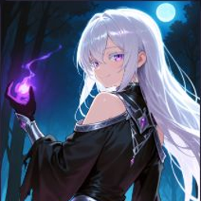
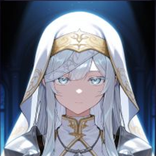
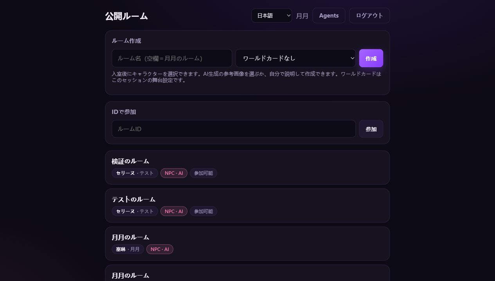
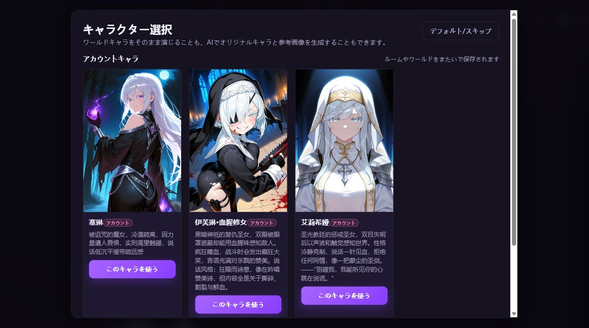
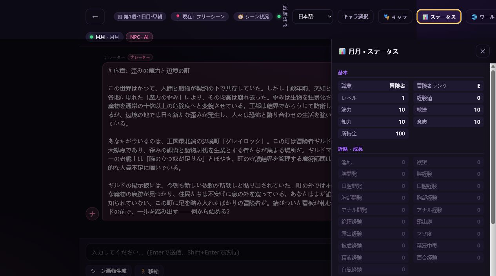
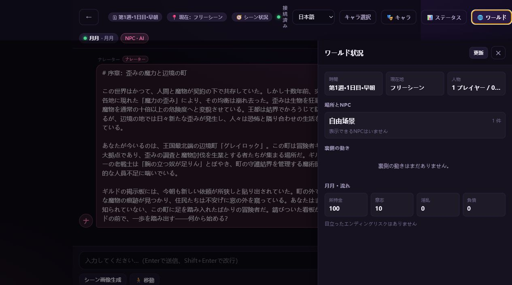
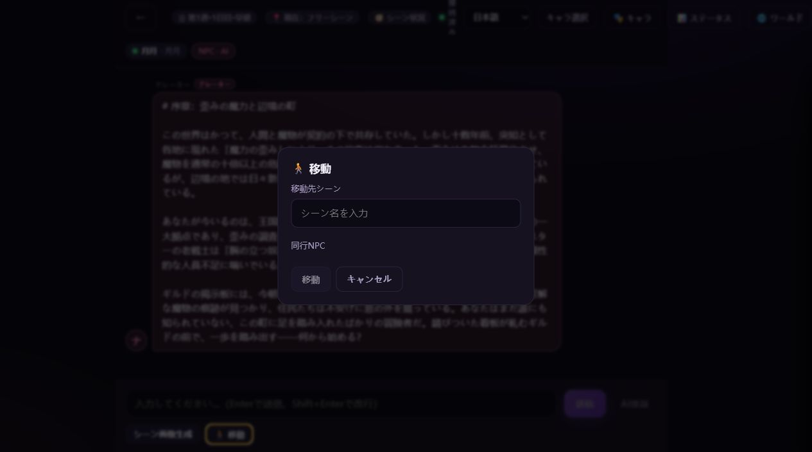
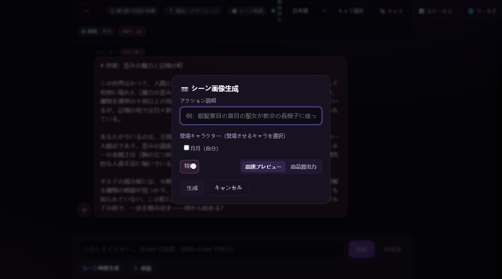

日本語ナレーション
ルーム作成時の言語設定をAIに伝え、ナレーターとNPCの本文を日本語で生成します。
Features
ルーム作成時の言語設定をAIに伝え、ナレーターとNPCの本文を日本語で生成します。
アカウントキャラ、デフォルト入室、AI生成キャラを選べます。
職業、ランク、能力値、所持金、状態、インベントリをセッション中に確認できます。
現在地、時間、NPC配置、裏側の動き、エンディングリスクをパネルで把握できます。
プレイヤーはシーンを移動し、AIが新しい状況をナレーションします。
現在の場面や指定したアクションをもとに、シーン画像生成の設定を行えます。
NPC System
発言意欲：高 | 緊迫度：4/5 | 理由：新人が依頼を選ぶ場面は、 ギルドの危機感と世界観を自然に伝えられる切り出しになる。

「掲示板の依頼を見たい。今の町で一番急ぎの問題は何？」
「北門の外で魔力の歪みが見つかった。危険だが、放置すれば町の結界まで 侵食される。まずは痕跡調査から始めるのが賢明だ。」
発言意欲：中 | 緊迫度：3/5 | 理由：ギルドマスターの説明を受け、 新人の実力を測るために訓練や同行を提案できる。

「現場へ出る前に最低限の確認をする。武器、魔法、交渉術。 どれを軸に動くつもりか、今ここで決めておけ。」
Screenshots





